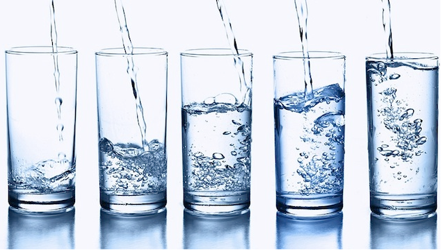

A água não é apenas importante, mas indispensável para a vida humana, representando cerca de 60% do peso de um adulto. Nos bebês, a proporção é ainda maior: 70%. Ela é o elemento mais importante do corpo, o principal componente das células e um solvente biológico universal, por isso todas as nossas reações químicas internas dependem dela. A água também é essencial para transportar alimentos, oxigênio e sais minerais, além de estar presente em todas as secreões (como o suor e a lágrima), no plasma sanguíneo, nas articulações, nos sistemas respiratório, digestivo e nervoso, na urina e na pele. Ela é encontrada até mesmo onde pouca gente imagina. Ela é responsável, por exemplo, por 20% dos ossos. Por tudo isso, a gente se ressente imediatamente da falta dela no organismo. Um ser humano pode ficar semanas sem ingerir alimentos, mas passar de três a cinco dias sem ingerir líquidos pode ser fatal. Os especialistas recomendam que a gente beba no mínimo 2,5 litros por dia.
Durante a atividade física, seu corpo perde muito liquido através do suor, afinal a forma que ele encontra para manter a temperatura a 37°C é evaporar água pela pele. Por isso,durante um exercício intenso, como nadar, malhar ou jogar vôlei, 90% da água que você gasta e eliminada pelo suor . Alem disso, a água também interfere em outros mecanismos muitos importantes,como transporte de oxigênio para os músculos, através dos glóbulos vermelhos do sangue; eliminação do dióxido de carbono pela respiração e regulação da pressão arterial, para o bom funcionamento do coração e da circulação. O suor e composto por água (99%), alguns nutrientes, principalmente sodio e cloro,e em quantidades muito pequenas, potássio, magnésio,cálcio,ferro,cobre e zinco